Extra-thick annotations and arrows
Each click gets a callout, label, and arrow on the real UI. You do not restage screenshots in a design tool.
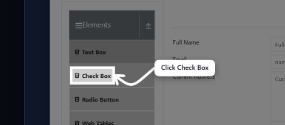
DocGen Studio tutorial
DocGen Studio is a Chrome extension documentation generator for click-by-click SaaS tutorials. Pin it, start recording, click through the product, then stop. You get annotated screenshots, optional AI step copy via OpenRouter, and a PDF or Markdown how-to you can ship to help centers, SOPs, or support macros.
Open the Chrome puzzle-piece Extensions menu and pin DocGen Studio. Pinning keeps the icon on the toolbar so you can start a recording in one click.
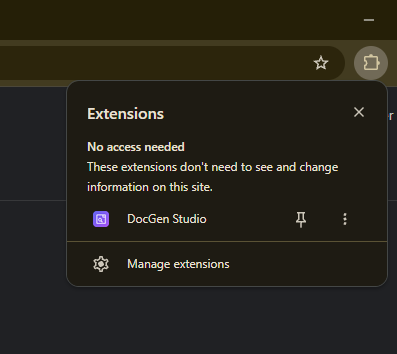
Key takeaway: if you cannot see the icon, it is unpinned, not uninstalled.
No. The key is optional. Without it, the extension still records clicks and annotated screenshots and uses local fallback text. With a key, the editor can draft a “How to…” title, summary, and step instructions from click labels.
sk-or-v1-…).google/gemini-2.0-flash-lite-preview-02-05:free.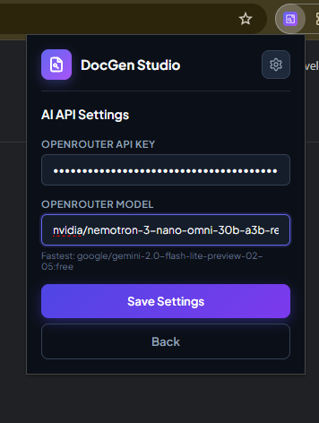
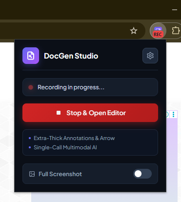
Key takeaway: screenshot images are not sent to OpenRouter. Only click labels go out, and only if you add a key.
Open the popup and click Start Recording. The status bar reads “Recording in progress…” and the toolbar icon shows a red REC badge.
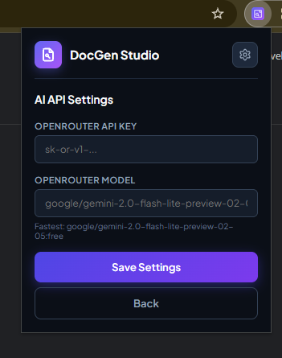
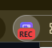
Click Stop & Open Editor after the last action in the walkthrough. Recording continues across in-page navigation, so you can move through a real SaaS flow in one session.
Key takeaway: extra-thick annotations and arrows are applied to each captured click automatically.
Use the editor to set the document title, write a short overview, and fix each workflow step. If a key is saved, steps may show “Generating AI…” then “Generated AI.” You can always overwrite the text.
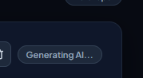
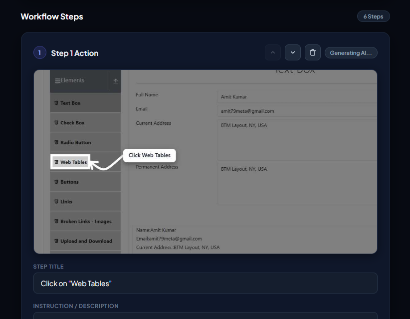
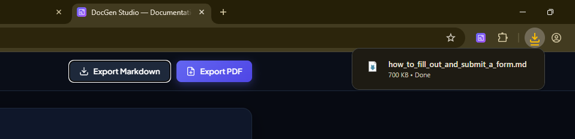
Focused Crop zooms the screenshot around the control you clicked. Leave it off to keep the full visible tab. Turn it on when the UI is dense and the click target would otherwise look tiny.
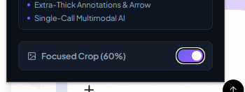
In the editor header, click Export Markdown or Export PDF. Markdown is best for GitHub, Notion, and help-center repos. PDF is best for email, onboarding packets, and print.
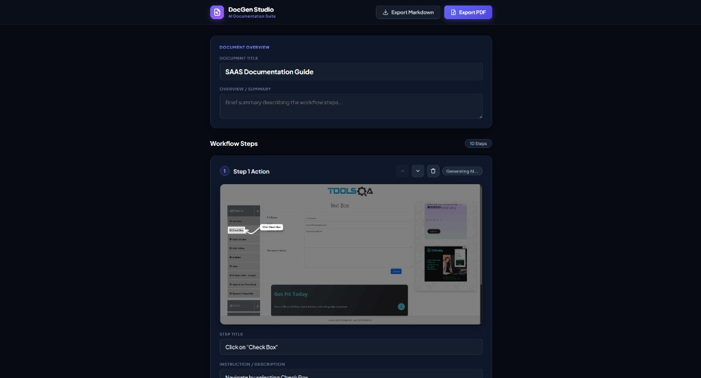
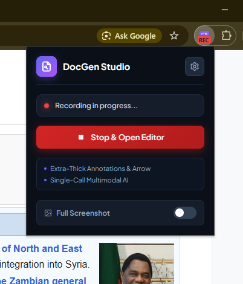
Key takeaway: export is local. The file is saved to your Downloads folder; nothing is uploaded to a DocGen server.
These are the parts of the Chrome extension documentation generator that show up in the finished SOP.
Each click gets a callout, label, and arrow on the real UI. You do not restage screenshots in a design tool.

One request drafts the document title, summary, and step copy from click labels. Images stay on the device. No key means local fallback text only.
Every recorded action becomes an editable card with screenshot, title, and instruction. Move steps up or down, or drop noise before export.
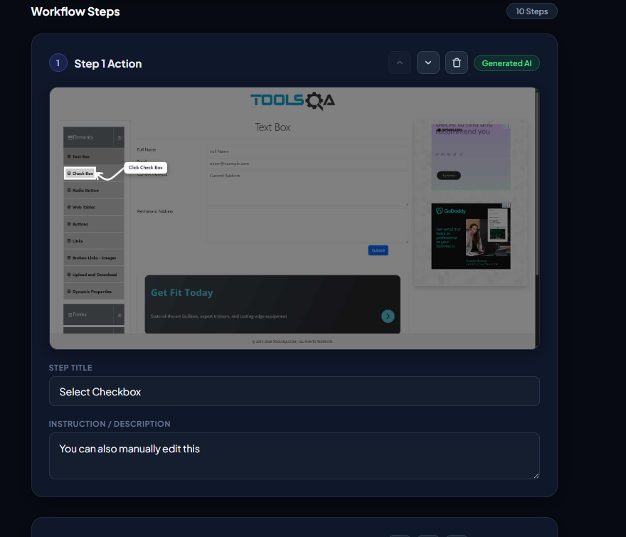
After you load or install the Chrome extension, open the puzzle-piece Extensions menu and pin DocGen Studio so the icon stays on the toolbar.
No. An OpenRouter key is optional. Without it, DocGen Studio still records clicks and screenshots and fills local fallback step text. With a key, the editor can draft titles and instructions from click labels.
Only click labels and element types, such as “user clicked a button labeled Save.” Screenshot images are not attached. Your API key stays in Chrome local storage on this device. See the privacy policy.
Focused Crop zooms the screenshot around the clicked control so the annotation stays readable. Turn it off to keep the entire visible tab.
Yes. Export Markdown downloads a .md how-to file. Export PDF saves a printable guide with the same steps and annotated images.
Yes. Recording continues across in-session navigation on the site you are documenting. Stop recording from the popup when the walkthrough is done.
Yes. Every step title and instruction is editable. You can also reorder or delete steps before you export.
Read the product overview or the privacy policy, then record a short flow on a public site to test export.